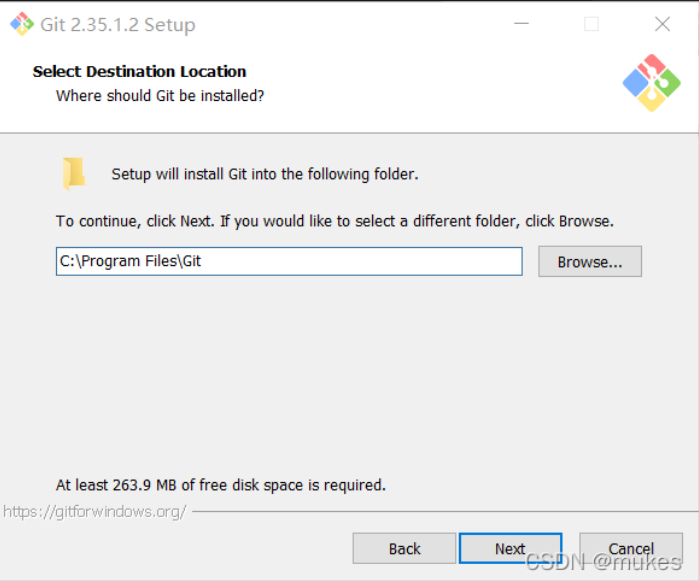
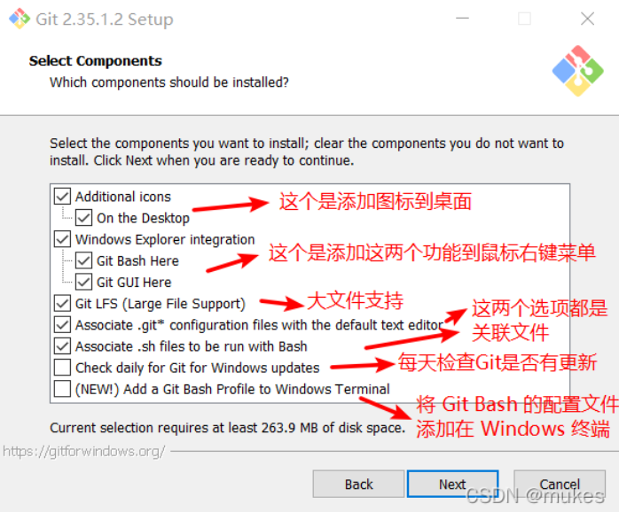
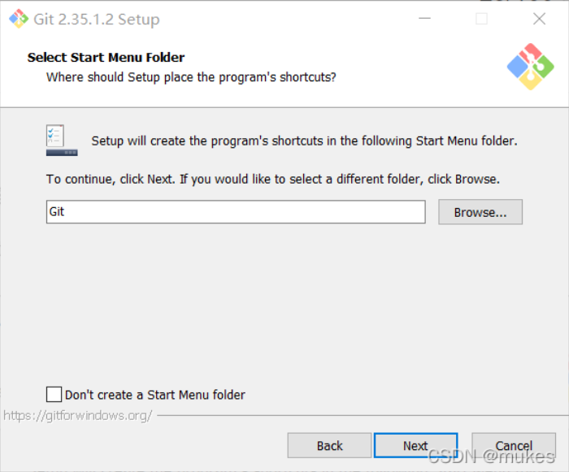
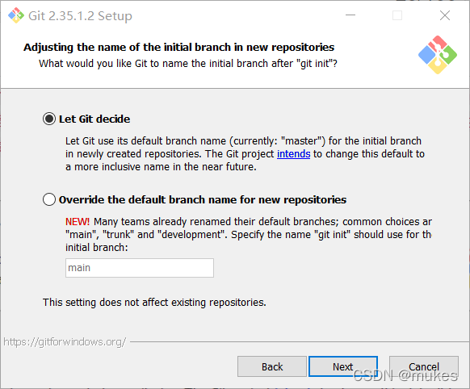
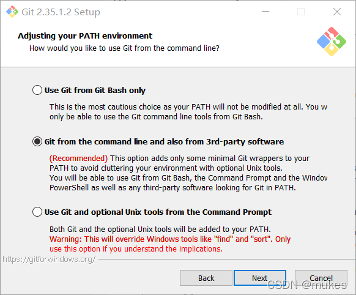
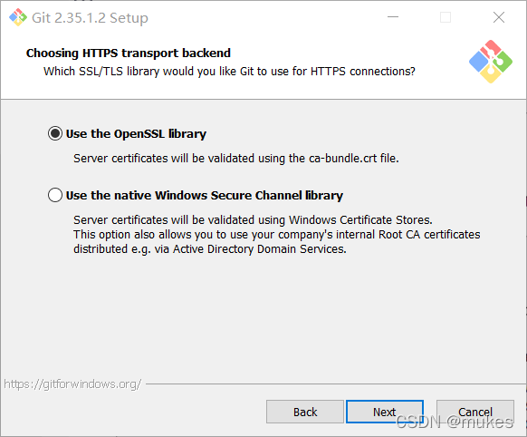

git 一条龙
这篇是移植过来的老文章，不是很严谨，仅供参考
安装
点击自己的系统，如 Windows。一般来说可以直接选择 Standalone Installer，同样这里也有 32 和 64 两个版本供选择。
先会让你选择安装位置，一般还是建议 Program Files 文件夹，也可以自己怎么顺手怎么来，不过养成好的使用习惯很有必要。

接着会让你选择安装组件，可以自己决定也可以照搬下面的选项。

方框内 Git 可改为其他名字，也可点击 “Browse...” 选择其他文件夹或者给"Don't create a Start Menu folder" 打勾不要文件夹，点击 [next] 到第五步。

决定初始化新项目(仓库)的主干名字，第一种是让 Git 自己选择，名字是 master ，但是未来也有可能会改为其他名字；第二种是我们自行决定，默认是 main，当然，你也可以改为其他的名字。一般默认第一种，点击 [next] 到第七步。

调整你的 path 环境变量，这里可以盲选第二个

选择执行文件，这个默认

选择 HTTPS 后端传输，可以直接默认
（对不起我写不下去了，下面所有选项全部默认就好了）
配置 GitHub 的 SSH
一 、\ 设置 Git 的 user name 和 email：\ $ git config --global user.name "xuhaiyan"\ $ git config --global user.email "haiyan.xu.vip@gmail.com"
二、生成 SSH 密钥过程：\ 1.查看是否已经有了 ssh 密钥：cd \~/.ssh\ 如果没有密钥则不会有此文件夹，有则备份删除\ 2.生存密钥：\ $ ssh-keygen -t rsa -C “haiyan.xu.vip@gmail.com”
如果提示 ssh-keygen 不是内部命令或者。。。
这时候要配置环境变量，具体操作如下：
1.找到 Git/usr/bin 目录下的 ssh-keygen.exe(如果找不到，可以在计算机全局搜索)
2.属性-->高级系统设置-->环境变量-->系统变量,找到 Path 变量，进行编辑，End 到最后，输入分号，粘贴复制的 ssh-keygen 所在的路径，保存；
按 3 个回车，密码为空。
Your identification has been saved in /home/tekkub/.ssh/id_rsa.\ Your public key has been saved in /home/tekkub/.ssh/id_rsa.pub.\ The key fingerprint is:\ ………………
最后得到了两个文件：id_rsa 和 id_rsa.pub
3.添加密钥到 ssh：ssh-add 文件名\ 需要之前输入密码。\ cd \~/.ssh 文件夹在：C:\Users\kingdee\.ssh 有一个文件名为 id_rsa.pub，把里面的内容复制到 git 库的我的 SSHKEYs 中
4.在 github 上添加 ssh 密钥，这要添加的是“id_rsa.pub”里面的公钥。\ 打开https://github.com/ ，登陆 xuhaiyan825，然后添加 ssh。
使用
git bash 是用的最多的 git 命令行程序
git gui 有图形界面，但是功能相对简陋，该用 bash 还得用 bash
命令
- git push：把所有提交上传
- git pull
- git add
- git add .：往暂存区添加所有更改
- git commit -m "some text"：提交
- git branch sth：创建分支
- git checkout：切换分支
- git branch -d sth：删除分支